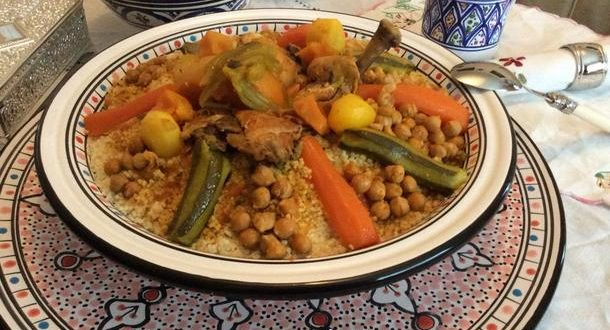
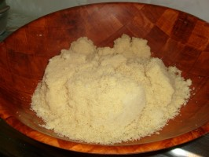
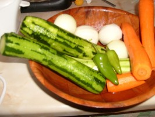
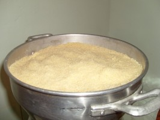

BIENVENU SUR NOTRE SITE D'APPRENTISSAGE EN CUISINE
Couscous Algerien au poulet

Le couscous algérien au poulet est une recette traditionnelle super aimée à la maison, un plat bien savoureux, riche en légumes et qu’on présente pour la cuisine de tout les jours, ou pour les grandes occasions. En tout cas y a pas
plus bon qu’un couscous au poulet, de la cuisine algerienne Le couscous algérien au poulet est toujours présenté en Algérie par la hôte de la maison pour ces invités, accompagné d’une chorba, ou de tajine batata kbab.
On ne s’en lasse jamais d’un bon couscous, surtout qu’on le présente de milles et une manière, ce qui fait la popularité de ce plat, et la particularité d’être une recette familiale numéro 1.
Ingredients
- 1 kg de couscous
- 1 kg de cuisse de poulet vous pouvez mettre n'importe quel partie du poulet
- 1 a 2 oignons selon la grosseur
- 2 a 3 carottes a votre goût, vous pouvez mettre plus au moins
- 2 a 3 carottes a votre goût, vous pouvez mettre plus au moins
- 2 a 3 courgettes
- 1 a 2 pommes de terre
- 1 poignée de pois chiche
- 2 a 3 cas de tomate conserve
- sel poivre, ras el hanout, paprika
- 2 poivrons
- huile
Instruction de cuissons
- mouillez et salez le couscous, et le laisser bien sécher
- enduisez vos main avec l'huile et faites rouler le couscous, pour que après il ne colle pas.

- laissez reposer, et préparez la sauce du couscous, passez l'oignon au robot. mettre dans une marmite (couscousier) l'huile, le paprika, l'oignon râpé, les tranches de poulet, et mettre sur le feu,

- ajoutez ensuite le navet coupe en 4, ainsi que les carottes, et puis les pomme de terre, ajouter les 2 poivrons, et puis ajouter l'eau pour tout couvrir, et laisser bouillir.
- quand la sauce commence a donner de la vapeur, mettre le couscous dans le haut du couscoussier et laisser évaporé

- après un certain temps vous allez voir que la vapeur commence a se dégagé de toute la surface du couscous laisser cuire 15 a 20 min, enlever alors le haut du coucoussier, et verser le couscous dans une terrine, mouiller avec un peu d'eau et
travailler doucement avec vos mains.
- ajoutez les courgettes coupées en 4, dans la sauce, et laisser cuire,
- remettre le couscous dans le haut du couscoussier, après échappement de la vapeur. laisser cuire encore un quart d'heure et retirer
- verser le couscous dans une terrine et ajouter au milieu un bon morceau de beurre, bien mélanger, et en même temps ajouter le pois chiche a la sauce pour que le tout cuit bien
- pour servir, remplissez votre assiette de couscous, la garnir bien avec les légumes que vous avez et le pois chiche, puis arroser avec la sauce, selon votre goût.
- disposer le poulet au milieu, et servez chaud.
Bonne degustation